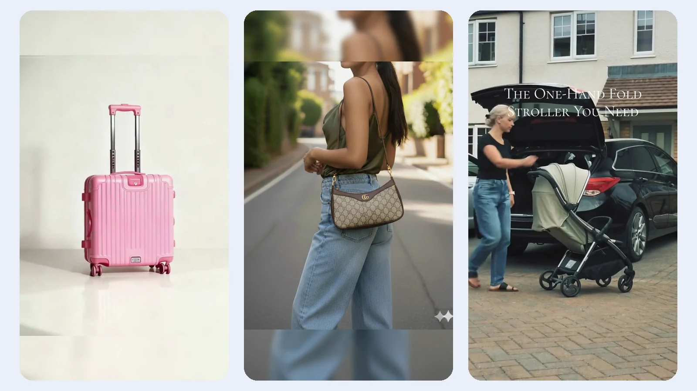

旅行箱 · 产品细节
以外观、结构与轮组特写呈现商品
INTERNSHIP PRACTICE / 零售视频
在布尔量科技产品运营实习期间，参与面向海外社媒的商品视频内容制作与分发。本页选取旅行箱、手袋与婴儿推车三条零售商品短视频，展示产品特写、穿搭场景和使用演示的不同表达方式。

RETAIL VIDEO
三条视频为零售商品内容示例；画面中的商品和品牌标识属于各自权利人。
WORK CONTEXT
根据简历记录，基于客户产品实拍图或展示视频制作 AI 带货视频模板，覆盖手机配件与智能穿戴等品类。
参与社媒矩阵的内容分发与数据监控，结合视频曝光和点击反馈调整内容表达。
参与 KOL 建联和带货视频落地，配合团队推进内容发布。
以上为简历中的实习阶段职责；本页三条零售视频不对应简历里的 3C 模板数量或达人曝光数据。